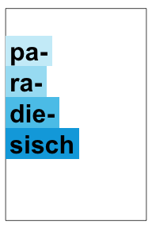

Enabling corporate design elements in R
The unikn package provides useful color functions — by defining dedicated colors and color palettes, and commands for changing, viewing, and using them — and styled text elements (e.g., for marking, underlining, or plotting colored titles) in R. The package’s pre-defined range of colors and text functions is based on the corporate design of the University of Konstanz (see this link for details), but can easily be adapted and extended to other purposes or institutions.
Overview
Institutions devise corporate designs (CDs) for creating and maintaining a consistent impression in presentations and publications. But even when writing an individual article or thesis, it makes sense to define some graphical elements (e.g., a color scheme) and use them consistently throughout the report. In 2014, the University of Konstanz introduced a highly recognizable CD. Its key component is the ubiquitous use of a Seeblau color and a corresponding color palette that blends various shades of Seeblau (in boxes, lines, and other graphical elements) with text (in black-and-white). (See the corporate design pages for details.)
The unikn package facilitates the use of corporate design elements for users of R. In addition, the package provides a range of color functions that make it very easy to define, modify, find, and use colors and color palettes. While this renders the use of default specifications simple and straightforward, experienced users can apply the tools provided by unikn in a flexible and creative fashion (e.g., for designing new color palettes and using them in scientific visualizations).
The unikn package currently provides five types of objects and functions:
Many dedicated colors and color palettes (e.g.,
Seeblauandpal_unikn);Functions for viewing and comparing colors (
seecol()), for using or changing color palettes (usecol()), and for demonstrating color palettes (demopal());Functions for creating new color palettes (
newpal()), for finding similar colors (simcol()), and for searching color names (grepal());Functions for plotting graphical objects (e.g., boxes and frames);
Functions for plotting styled text elements (e.g., highlighting and underlining text).
Essentially, unikn began by defining some colors, but has now grown into a toolbox for addressing color- and plotting-related tasks in R. As we have fun creating it, we hope you find the package useful too — and please use responsibly!
Installation
The latest release of unikn is available from CRAN at https://CRAN.R-project.org/package=unikn:
install.packages('unikn') # install from CRAN client
library('unikn') # loads the packageThe current development version can be installed from its GitHub repository at https://github.com/hneth/unikn/:
# install.packages('devtools') # (if not installed yet)
devtools::install_github('hneth/unikn')
library('unikn') # loads the packageColors and color functions
A distinctive and recognizable color scheme is the most recognizable element of the University of Konstanz’s corporate design.
Basic color palettes
Basic color palettes are defined according to the Corporate Design Manual (see the corporate design specifications).
The default color palette pal_unikn combines:
- 5 shades of
pal_seeblau(reversed, i.e., from darker to lighter);
- the base R color
"white"(as the center color);
- 4 shades of grey (
pal_grau[1:4]);
- the base R color
"black"(as the last color).
This yields a diverging, symmetrical default color palette pal_unikn consisting of 11 colors:
# Default color palette: -----
# pal_unikn # 11 default colors
# View color palette (by plotting it): -----
seecol(pal_unikn)A shorter version consisting of 10 colors is provided as
pal_unikn_web.An alternative color palette with 10 more muted colors (intended for PowerPoint presentations) is provided as
pal_unikn_ppt.
Evaluating seecol(pal = "unikn_basic") shows these three basic unikn color palettes.
All color palettes
Beyond the three variants of pal_unikn, the unikn package provides the following color palettes:
seecol("all")
The color palettes pal_unikn_web() and pal_unikn_ppt() correspond to the official definitions of color palettes for electronic and print media, respectively. The default palette pal_unikn of unikn combines the five shades of blue in pal_seeblau with the six non-blue colors from pal_unikn_web() to create a symmetrical palette of 11 colors.
All color palettes exported by unikn are built from elements consisting of nine different color hues. Specifically, an Excel file entitled Colours for complex graphics defines 9 color gradients that are created and exported by unikn as the following named color palettes:
seecol(pal = "grad_all")Overall, the unikn package exports 16 dedicated color palettes, plus the nine preferred colors of pal_unikn_pref (e.g., Seeblau, Seegruen, etc.) as named colors. For details on each named color hue, evaluate seecol() on the following color palettes:
# 8 mono-tone palettes: -----
# Name: Nr: Tone:
pal_seeblau # 5 shades of seeblau
pal_peach # 5 peach
pal_grau # 5 grau
pal_petrol # 5 petrol
pal_seegruen # 5 seegruen
pal_karpfenblau # 5 karpfenblau
pal_pinky # 5 pink
pal_bordeaux # 5 Bordeaux
# 1 signal (Ampel) palette: -----
pal_signal # 3 signal/AmpelEach color palette contains a preferred color.1 All preferred colors (i.e., named colors of distinct color hues) are contained in a corresponding color palette pal_unikn_pref:
# See the palette of 9 preferred colors/hues:
seecol(pal_unikn_pref)
# Using preferred colors:
pal_unikn_pref # color palette of 9 preferred colors
pal_unikn_pref[1] # preferred (named) color 1
pal_unikn_pref[[1]] # color value 1: #59C7EB"
pal_unikn_pref["Seeblau"] # preferred color by nameAdditional pre-defined color palettes in unikn include:
# See additional color palettes:
seecol(pal_unikn_light) # palette of 8 light colors (in 4 pairs)
seecol(pal_unikn_dark) # palette of 8 dark colors (in 4 pairs)
seecol(pal_unikn_pair) # palette of 16 paired colors (in 8 pairs)More flexible and complex color palettes can be created by using the seecol() and usecol() functions.
Overview of color-related functions
Two main functions — seecol() and usecol() — provide a simple interface for viewing and using color palettes.
Additional color functions (i.e., newpal(), grepal(), shades_of(), and ac()) provide auxiliary functionality (like creating new color palettes, finding colors whose names match some pattern, creating color gradients, or adding transparency to colors).
Viewing color palettes with seecol()
The seecol() function enables a quick inspection of a color palette. It provides a quick overview over the details of a color palette and allows comparisons between multiple color palettes:
# Plot a color palette:
seecol(pal = pal_unikn_pref, # a color palette to plot
hex = TRUE, # show HEX code of colors?
col_brd = "white", lwd_brd = 5) # color and width of borders
Partial color palettes
When only a subset of a color palette are needed, the seecol() and usecol() functions provide a reasonable subset of a known unikn color palette:
# Subset of all color palettes:
seecol(n = 4)
# Details of a partial palette:
# seecol(pal_seeblau, n = 4)Changing and creating color palettes
The usecol() and seecol() functions provide some generic options for manipulating and showing color gradients based on given colors or color palettes. This serves two main functions:
- Reducing or extending existing color palettes (to arbitrary lengths).
- Mixing and merging colors and color palettes into new color palettes.
Here are some examples of both functions in action:
- Extending or reducing an existing color palette:
seecol(pal_unikn, n = 21) # extend a color palette
Users of the %>% operator (from the magrittr package) may prefer the following pipe:
Note that reducing an unikn color palette selects a suitable subset of its colors, rather than just truncating the scale.
- Mixing and merging colors and visualizing color palettes is possible on the fly:

Related examples include:
Using color palettes with usecol()
The usecol() function provides convenient access and additional options for using them in graphs. Here are some examples:
1. Plotting with base R
All unikn colors, palettes and functions can be used in base R plots (using the graphics and grDevices packages).
By default, set the plot’s color argument to usecol() with some unikn color palette:

Two additional arguments allow modifying the existing color palette:
providing a value for
nreduces or extends the selected color palette;adding an opacity value for
alpha(in the range[0, 1]) regulates color transparency.
Visualizing unikn color palettes with image() (from the graphics package) works as well:
# Random images:
set.seed(1)
n <- 20
m <- matrix(rnorm(n*n), ncol = n, nrow = n)
image(m, col = usecol(pal_seeblau, n = 50),
main = "50 shades of Seeblau", axes = FALSE)
2. Plotting with ggplot2
Using unikn in ggplot() commands (using ggplot2) or using colors from other color packages (e.g., RColorBrewer) is easy as well. Just wrap the color palette to use in usecol() (and scale or change transparency as needed):
# 0. Create data: ----
# Example based on https://www.r-graph-gallery.com/137-spring-shapes-data-art/
n <- 50
names <- paste("G_", seq(1, n), sep = "")
df <- data.frame()
set.seed(3)
for(i in seq(1:30)){
data = data.frame(matrix(0, n, 3))
data[, 1] <- i
data[, 2] <- sample(names, nrow(data))
data[, 3] <- prop.table(sample( c(rep(0, 100), c(1:n)), nrow(data)))
df = rbind(df, data)}
colnames(df) <- c("X","group","Y")
df <- df[order(df$X, df$group) , ]
# 1. Choose colors: ----
# (a) using RColorBrewer:
library(RColorBrewer)
cur_col <- brewer.pal(11, "Paired")
cur_col <- colorRampPalette(cur_col)(n)
cur_col <- cur_col[sample(c(1:length(cur_col)), size = length(cur_col))] # randomize
# (b) using unikn:
library(unikn)
cur_col <- usecol(pal_unikn, n = n)
# cur_col <- cur_col[sample(c(1:length(cur_col)), size = length(cur_col))] # randomize
# 2. Plot: ----
library(ggplot2)
ggplot(df, aes(x = X, y = Y, fill = group)) +
geom_area(alpha = 1, color = Grau, size = .01 ) +
theme_bw() +
scale_fill_manual(values = cur_col) +
theme_void() +
theme(legend.position = "none")

Creating color palettes with newpal()
The newpal() function allows creating new color palettes (typically as data frames with dedicated color names).
The color palettes included in the unikn package are based on the CD manual of the University of Konstanz, Germany. However, the functionality provided by the package makes it easy and straightforward to define and use your own color scales. In the following, we provide examples to illustrate how this can be achieved for other corporations or institutions.
The colors of Princeton University

The color scheme of Princeton University is easily recognized by its combination of orange with black and white elements. The official guidelines (available here) define “Princeton Orange” as Pantone (PMS) 158 C.
-
The PANTONE™ color finder at https://www.pantone.com/connect/158-C yields the following color values:
- RGB:
232 119 34
- HEX/HTML:
#E87722
- CMYK:
0 62 95 0
- RGB:
-
However, the guide also specifies and distinguishes between two additional versions of orange and provides the following HEX/HTML values for them:
- Orange on white: “#E77500”
- Orange on black: “#F58025”
- Orange on white: “#E77500”
These definitions suggest defining three separate versions of orange and corresponding color palettes:
# HEX values for 3 shades of orange:
orange_basic <- "#E87722" # Pantone 158 C
orange_white <- "#E77500" # orange on white
orange_black <- "#F58025" # orange on black
# Defining color palettes:
uni_princeton_0 <- c(orange_basic, "black")
names(uni_princeton_0) <- c("orange", "black")
uni_princeton_1 <- c(orange_white, "white", "black")
names(uni_princeton_1) <- c("orange_w", "white", "black")
uni_princeton_2 <- c(pal = c(orange_black, "black", "white"))
names(uni_princeton_2) <- c("orange_b", "black", "white")Alternatively, we can define both (color values and their names) in one step by using the newpal() function:
uni_princeton_1 <- newpal(col = c("#E77500", "white", "black"),
names = c("orange_w", "white", "black"))A new color palette can now be evaluated with seecol(), scaled by usecol(), and then used in visualizations (e.g., using base R plot() functions or ggplot2). Here, we use the usecol() function to extend our color palette uni_princeton_1 to 15 colors and illustrate the resulting color palette my_pal with the demopal() function:
# View color palette:
# seecol(uni_princeton_1)
# Scale color palette:
my_pal <- usecol(uni_princeton_1, n = 15)
# Use my_pal for plotting:
demopal(my_pal, type = "polygon", col_par = NA, main = NA, seed = 10)

The colors of Google
Color palettes for other entities and purposes can easily be created. To illustrate the steps involved, let’s create a color palette of the well-known Google logo.
The typical steps of creating a new palette are:
Choose some colors (and their R color names, or as RGB/HEX/HCL values, e.g., from sites like https://www.schemecolor.com).
Define the colors as an R vector (of type character).
Define their names as a second R vector (of type character).
Use the
newpal()command to define the new color palette.Use the
seepal()command to inspect the new color palette.
# 1. Choose colors:
# Google logo colors (from <https://www.schemecolor.com/google-logo-colors.php>)
# 2. Define colors (as vector):
color_google <- c("#4285f4", "#34a853", "#fbbc05", "#ea4335")
# 3. Define color names (as vector):
names_google <- c("blueberry", "sea green", "selective yellow", "cinnabar")
# 4. Define color palette:
pal_google <- newpal(color_google, names_google)
# 5. Inspect color palette:
seecol(pal_google,
col_brd = "white", lwd_brd = 8,
main = "Colors of the Google logo")
The new palette pal_google can now be used in R graphics and modified in various ways (e.g., by the usecol() function).
See the vignette on “Institutional colors” of the unikn package for additional examples.
Finding colors with grepal()
The grepal() function allows finding colors in a color palettes by matching their name to a pattern.
Specifically, grepal(pattern, x) searches a color palette x (i.e., a vector of color names or data frame of named colors) for elements that match a pattern and returns those elements (colors) that match the pattern. The pattern can be a regular expression.
By default, grepal() searches the 657 named colors provided by colors() in base R:
# Find colors matching a pattern:
oranges <- grepal("orange", plot = FALSE)
#> Searching the elements of x
# See color palette:
seecol(oranges,
col_brd = "white", lwd_brd = 2,
main = "Shades of 'orange' in colors()")Providing a list of color palettes to the pal argument of the seecol() function allows comparing multiple color palettes:
# Find colors:
pink_olive <- grepal("(pink)|(olive)", plot = FALSE)
#> Searching the elements of x
purple_orange <- grepal("(purple)|(orange)", plot = FALSE)
#> Searching the elements of x
# See color palettes:
seecol(pal = list(pink_olive, purple_orange),
pal_names = c("pink|olive", "purple|orange"),
main = "Comparing pink olives and purple oranges")
To make the grepal() more flexible, its pattern argument can use regular expressions, and its x argument works with both vectors and data frames (e.g., the unikn color palettes).
Text decorations
Beyond color functions, unikn provides additional functions for plotting graphical elements (like boxes) and styled text (with decorations like colored backgrounds or underlining). By default, the text-decoration functions assume that you want to add styled text to an existing plot, unless the new_plot argument specifies a type of plot to be generated. As the use of these functions is explained in detail in vignette("Text"), we only provide some examples here:
Mark
The mark() function allows emphasizing text by plotting it with colored background (to provide the functionality of “Markieren”):
Underline
The uline() function allows emphasizing text by plotting it with colored underlining (to provide the functionality of “Unterstreichen”):
uline(labels = c("Geradlinig", "Authentisch", "Beweglich", "Offen", "Paradiesisch"),
x = .05, y = .9, y_layout = "even", cex = 1.1, font = 2, new_plot = "slide")
Post
The post() function allows adding text to a rectangular xbox (to provide the functionality of “Merken”):
xbox(col = usecol(pal_seeblau[[5]]), dim = c(2, 2))
post(labels = c("Für eine", "Kultur der", "Kreativität"), x = .1, y = .8, cex = 1.4, font = 2)
The color and font parameters can be adjusted to obtain different looks:
post(labels = c("creative.", "together"), new_plot = "xbox",
y_layout = .02, cex = 2, font = c(1, 3),
col_bg = pal_seegruen[[1]], col = c(Petrol, Pinky))
Headings
The heading() function is a convenient wrapper around mark:

Headings violating the official recommendations (e.g., step-wise titles) will generate a message:
heading(labels = c("Ewig", "währt am", "längsten..."),
y = 2/3, col_bg = usecol(pal_pinky))
#> Step-wise titles are discouraged: Consider re-arranging?
URLs
Finally, the url_unikn() function allows formatting URLs the uni.kn way:
Using custom color palettes
If custom color palettes are available, the text decoration functions can be used for graphical annotations.
- For instance, using color palettes of other academic institutions (defined in the vignette on “Institutional colors”):

- Using the color palette
pal_google(defined above):
Caveats
Please note the following caveats:
Plotting text (i.e., graphically rendering characters) is rarely a good idea. It typically doesn’t scale (when changing the size of images) and cannot be recognized automatically (e.g., copied, indexed, or scraped). Hence, the corresponding unikn functions should only be used in contexts in which no better solutions are available or practical (e.g., when specifically creating images, or adding annotations to graphs).
Like all templates, our offers are subject to constraints and limitations. As a standard installation of R lacks the “Theinhardt” fonts, we can only mimic the official design specifications (in Arial, sans serif). Nevertheless, the unikn package helps preventing common mistakes by novices (e.g., boxes or lines extending beyond text, or step-functions in multi-line titles) and can be customized and improved by expert users.
Overall, the unikn functions can be useful for solving color-related tasks and plotting graphical elements (e.g., boxes, logos, etc.). Ideally, it should help you in creating a stylish and recognizable design for your presentations and visualizations.
ToDo

The unikn package is work in progress. We are currently working on:
- Adding institutional color palettes
- Additional templates and themes (for plots and text decoration)
Please comment on GitHub or contact us if you need additional features or want to help creating them.
Call for contributions
Have you used unikn to create your own color palettes?
If so, please let us know (e.g., by posting on this GitHub issue)!
We collect color palettes from other institutions to make them available to R users in future versions of unikn.
To enable us to verify and provide appropriate credit to your contributions, please provide us with the following information:
- your code (e.g., the
newpal()command creating your color palette),
- your source (e.g., some URL with color definitions),
- your name and some contact information (e.g., an Email address).
We’re looking forward to your inputs and contributions!
Resources
The following versions of unikn and corresponding resources are currently available:
| Type: | Version: | URL: |
|---|---|---|
| A. unikn (R package): | Release version | https://CRAN.R-project.org/package=unikn |
| Development version | https://github.com/hneth/unikn/ | |
| B. Online documentation: | Release version | https://hneth.github.io/unikn/ |
| Development version | https://hneth.github.io/unikn/dev/ |
Contact
Please note and report any unikn-related issues at https://github.com/hneth/unikn/issues. We are looking forward to your feedback, comments, or questions.
Copyrights

The University of Konstanz’s Corporate Design (CD) was created by Strichpunkt GmbH and the University of Konstanz in 2014. The unikn package authors are members of the research group Social Psychology and Decision Sciences (SPDS) at the University of Konstanz. We facilitate access to CD elements for fellow users of R (e.g., for creating scientific visualizations), but all copyrights on the design remain with the original copyright holders.
We aim for an authentic representation of a highly-specified corporate design. While rigid specifications help to maintain coherence and consistency, they also tend to cause frustration in expert users. As the design has been developed in a flexible way that allows for individual elements to be modified as needed, we allow for some liberties, mostly by relaxing some restrictions. Examples include:
- enabling finer color gradients and arbitrary combinations of color palettes (by applying the
seecol()andusecol()functions to color palettes);
- providing a designated
Signalcolor (frompal_signal);
- using the spelling “color” (rather than “colour”) throughout the unikn package.
License


unikn by Hansjörg Neth and Nico Gradwohl is licensed under a Creative Commons Attribution-ShareAlike 4.0 International License. (Based on a work at https://github.com/hneth/unikn).
Citation and References
To support our efforts, please cite the unikn package in derivations or publications:
- Neth, H., & Gradwohl, N., (2022). unikn: Graphical elements of the University of Konstanz’s corporate design.
Social Psychology and Decision Sciences, University of Konstanz, Germany.
Computer software (R package version 0.6.0, September 20, 2022).
Retrieved from https://CRAN.R-project.org/package=unikn.
doi 10.5281/zenodo.7096191
A BibTeX entry for LaTeX users is:
@Manual{,
title = {unikn: Graphical elements of the University of Konstanz's corporate design},
author = {Hansjörg Neth and Nico Gradwohl},
year = {2022},
organization = {Social Psychology and Decision Sciences, University of Konstanz},
address = {Konstanz, Germany},
note = {R package (version 0.6.0, September 20, 2022)},
url = {https://CRAN.R-project.org/package=unikn},
doi = {10.5281/zenodo.7096191},
}The copyrights to all designs remain with their original creators:
- Universität Konstanz, © 2015, Version 1.6, 21. September 2015, ‒ uni-konstanz.de
- Strichpunkt GmbH, ‒ strichpunkt-design.de
Color and text box definitions are based on the following corporate design at uni.kn specifications:
[File README.md updated on 2022-10-23.]
Whereas the official definition does not identify a preferred color for the Ampel color palette (
pal_signal), we provide its alert color (i.e.,pal_signal[2]) as a designated colorSignal.↩︎